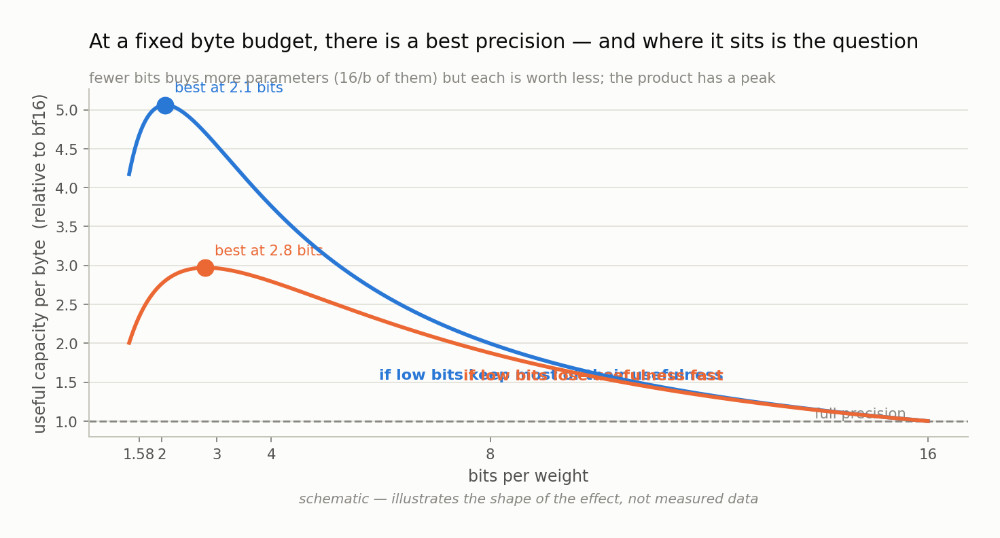

Chapter 14 — Fitting the law#
This chapter explains how a pile of training runs becomes a law you can use — what functional forms are on the table, how one is chosen without fooling yourself, how the uncertainty is quantified, and what has to happen before anyone should believe the answer.
By the end of the grid there will be roughly a hundred numbers: for each combination of model size, precision, and training duration, one validation loss. A law turns that table into a function — something you can evaluate at a size you never trained, at a byte budget you care about, to get an answer. This chapter is about the machinery that does that, and about the several distinct ways it can quietly go wrong.
None of this has run on real data yet. The grid is still filling in. What follows is the method as implemented and tested against synthetic data with known answers, which is the only honest way to describe it right now.
What we are fitting#
The target is a function that predicts validation loss from three inputs: N, the number of non-embedding parameters; D, the number of training tokens; and b, the bits per weight.
The starting point is the Chinchilla form from Chapter 4, which handles N and D:
L(N, D) = E + A/N^α + B/D^β
Precision has to enter somewhere. The interesting part is that there is more than one plausible place to put it, and the choices make different predictions in the regime this project cares about most.
Two theories, in equation form#
Form A — effective capacity. The idea: a low-bit parameter is simply worth less than a full-precision one. So take the parameter count and discount it by a factor f(b) that depends on bit width.
L(N, D, b) = E + A/(N·f(b))^α + B/D^β
Here f(b) is the effective capacity of a b-bit parameter, a number between 0 and 1 with f(16) fixed to 1 by definition. If ternary parameters were worth 55% of a full-precision one, f(1.58) = 0.55, and a ternary model would behave exactly like a full-precision model with 55% as many parameters. The penalty for low precision is fixed, and more training does not change it.
Form B — additive degradation. The idea: precision loss is a separate penalty term that grows with training and shrinks with model size.
L(N, D, b) = E + A/N^α + B/D^β + C·g(b)·D^δ/N^η
The extra term is zero for full precision (g(16) = 0) and grows with D. Here, the penalty for low precision is not fixed — it gets worse the longer you train.
The measurements in Chapter 13 already lean one way: from 20× to 320× at 3M parameters, the ternary gap grew monotonically with no sign of flattening, and it grew with model size at fixed training duration. That is Form B's signature. But six cells is not a fit, and the point of having competing forms is to let the data choose rather than the researcher.
A third option, Form C, includes both mechanisms with a penalty that discourages the extra term from being used unless it earns its place.
Fitting without fooling yourself#
Fitting means choosing the parameters (E, A, B, α, β, and the f or g values) that make the formula best match the measurements. Three details matter more than they might appear.
Fit the logarithm, not the raw loss. Losses across the grid span a wide range. Fitting raw differences would let the largest-loss runs dominate. Working with log residuals — the difference between log(predicted) and log(observed) — makes the fit care about relative error, which is what a law across orders of magnitude should care about.
Use a robust loss. One bad run — a training instability, a corrupted shard — should not bend the whole law. The fit uses a Huber loss, which behaves like a normal squared-error fit for small residuals but grows only linearly for large ones, so an outlier can pull a little but not a lot.
Weight by measured noise. Not every cell in the grid is equally trustworthy: seed noise varies about fourfold across cells (0.006 to 0.066 bits per byte). Treating a noisy single-seed cell as equal evidence to a clean three-seed cell is throwing away information. Each row is weighted by one over its measured variance, so quiet cells pull harder — a change made after an external reviewer pointed out the original fit treated all rows alike.
The optimizer itself is unremarkable and deliberately so: a bounded quasi-Newton method (L-BFGS-B) started from 256 different initial guesses, keeping the best result. Multiple starts matter because these surfaces have local minima; a single start can converge somewhere confidently wrong. The whole procedure is deterministic given a seed, so the same data always produces the same law.
Choosing between forms — the rule that prevents the classic mistake#
Here is the trap. Give a formula more free parameters and it will always fit your existing data better. Form C has more knobs than Form A, so Form C will win on in-sample fit essentially every time — and may be worse at the only thing that matters, which is predicting something it has not seen.
The project never selects on in-sample fit. Selection is by leave-one-size-out extrapolation: hold out every run at one model size, fit on the rest, and measure how well the fit predicts the held-out size. Repeat for each size. The form with the lowest held-out error wins.
There is a stricter variant used for the real credibility test: fit only on sizes below the largest, and predict the largest. That is the direction that matters — laws are used to extrapolate upward, never downward.
How confident is the answer?#
A single best-fit number is not a result; a result has a range. The project uses bootstrapping: resample the runs with replacement (stratified by size and precision so the resample keeps the grid's shape), refit, and repeat. Do it a few hundred times and you have a distribution for every quantity — each exponent, each f(b), and each derived crossover point. The 5th and 95th percentiles of that distribution are the confidence interval.
This is what lets the project say "ternary retains 55% of full-precision capacity, plus or minus 4 points" rather than "ternary retains 55%", which would be a number pretending to a precision it does not have.
The blind test#
Fitting a curve through points you already have is not evidence that the curve is right. The test is prediction.
The protocol is deliberately awkward, because awkward is the point:
- The grid finishes. The law is fitted and frozen.
- The predicted losses for the 125M-parameter validation runs — which have not been trained — are written to a file and committed to the repository with a timestamp.
- Only then do those runs launch, on rented cloud hardware, within a hard $100 cap.
- The predictions are compared against what actually happened.
The acceptance criteria are set in advance too: predicted losses must land within twice the band implied by measured seed noise, and the predicted ordering of precisions at 125M must be correct. Getting the ordering right matters independently — a law that is off by a constant but ranks the options correctly is still useful for choosing a configuration.
If the prediction misses, that is reported as a result, not buried. A law that bends at 125M is genuinely informative: it tells you the small-scale regime is not the same regime, which is exactly the kind of thing a field needs to know.
Cashing it in: from a law to a recommendation#
A fitted law is not yet useful. Turning it into advice takes two more steps.
First, convert bytes to configurations. For a given budget M and bit width b, the largest model that fits has N = M × 8 / b parameters — but with a correction, because real packed formats carry overhead. The project measures actual packed sizes rather than trusting the arithmetic, for the reason Chapter 5 gives: per-group scales and a 16-bit embedding table are real bytes that the simple formula ignores.
Second, optimize within the budget. For every budget and every training duration, evaluate the fitted law at each bit width's best allowed parameter count and take the winner. Two pictures come out of this:
The iso-memory frontier answers "at each byte budget, what is the best loss achievable, and by which precision?" It is the headline figure of the project: a set of curves, one per bit width, whose crossings are the practical answer to which precision to choose.
The b*(M, D) phase diagram answers the same question as a map. Budget on one axis, training duration on the other, and the colour at each point is the winning bit width. Regions of the same colour are regimes where the same answer holds; the boundaries between them are the crossovers.

One honest complication, raised in external review and now built in: at a fixed byte budget, the many-parameters-few-bits option can cost several times more training compute than the few-parameters-many-bits option, since training cost scales with parameter count. The prescription optimizes deployment bytes, which is defensible when you train once and serve for months — but only if the training cost is visible. So the phase diagram carries contour lines of equal training compute laid over it. A reader can see both what is optimal to deploy and what it costs to obtain.
What to remember#
The law is a formula predicting loss from parameters, tokens, and bits, and the interesting choice is where precision enters it: one candidate makes low-bit penalties fixed, another makes them grow with training, and they disagree exactly in the overtrained regime everyone deploys in. The fit uses log residuals, a robust loss, noise-based weighting, and many starting points, but none of that determines which form wins — selection is by held-out extrapolation to a size the fit never saw, never by in-sample quality. Uncertainty comes from bootstrap resampling, so every reported exponent and crossover carries an interval. The real test is a blind one: freeze the law, commit timestamped predictions, then train the validation anchors and compare. The payoff is a frontier and a phase diagram that say which precision wins at which budget — with training-compute contours drawn on top, so the recommendation is honest about what it costs to follow.